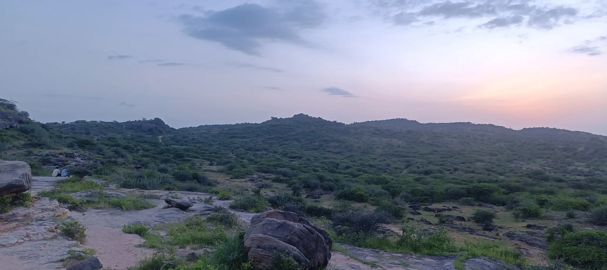
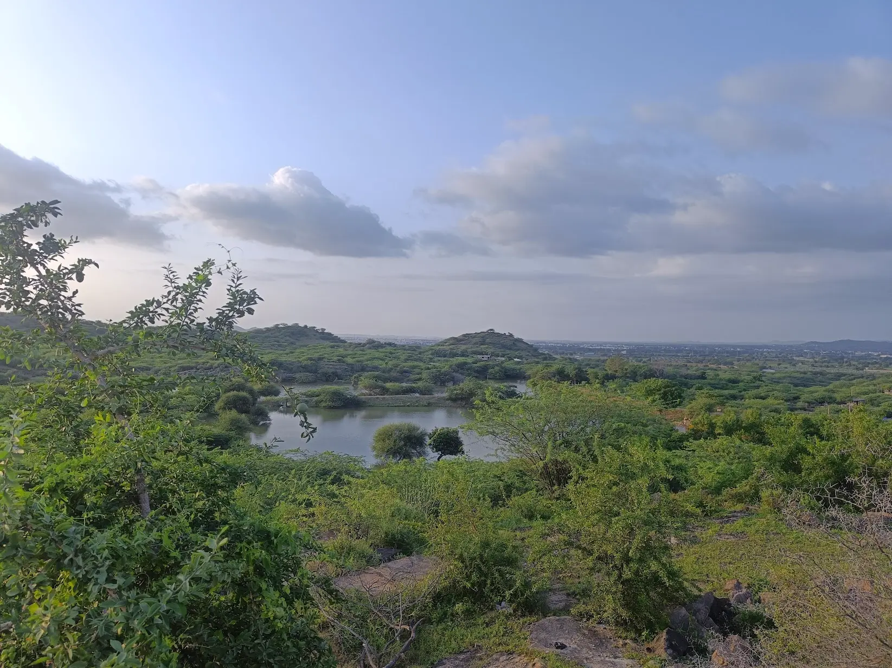
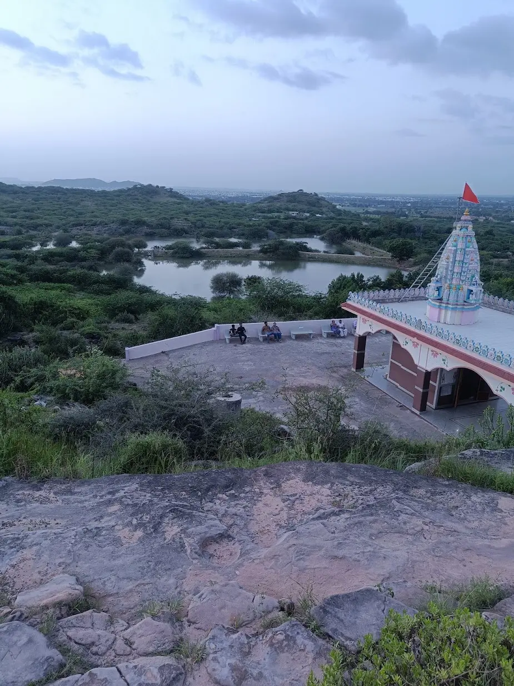

Gangeshwar Mahadev is a serene Shiva temple perched atop a hill, located approximately 13 kilometers from Bhuj. This sacred site combines spiritual significance with adventure, offering devotees and trekkers alike a rewarding experience. The temple is dedicated to Lord Shiva (Mahadev) and attracts pilgrims throughout the year, especially during Mahashivratri. The trek to the temple summit is moderate and takes about 30-45 minutes, winding through rocky terrain and occasional vegetation. Once at the top, visitors are rewarded with breathtaking 360-degree panoramic views of the surrounding Kutch landscape, including distant villages, seasonal water bodies, and the vast arid plains stretching to the horizon. The combination of religious atmosphere, physical activity, and stunning vistas makes Gangeshwar Mahadev a unique destination for both spiritual seekers and outdoor enthusiasts.
Who Should Visit
- Trekkers & Hikers : Enjoy a moderate hill trek with rewarding summit views—perfect for beginner to intermediate levels.
- Devotees : Visit this peaceful Shiva temple for prayers, meditation, and spiritual connection.
- Photographers : Capture panoramic landscapes, especially stunning during sunrise and sunset hours.
- Adventure Families : A family-friendly trek suitable for children above 8 years with proper supervision.
How to Reach
- From Bhuj (10km) : Drive to the hill base via local roads. Journey takes about 15-20 minutes by car or taxi (₹300-600 return).
- Trek Details : The climb from base to temple takes 30-45 minutes. Well-defined path with some rocky sections.
- Best Time to Trek : Early morning (6-8 AM) to avoid heat, or late afternoon (4-6 PM) for sunset views.
- Physical Requirements : Moderate fitness level needed. Wear comfortable trekking shoes and carry water.
When to Visit
November to February (Winter):
Best season for trekking. Pleasant temperatures (18-28°C), clear skies, and comfortable climbing conditions.
March to June (Summer):
Very hot (35-42°C). Only trek early morning (before 8 AM) or late evening (after 5 PM). Carry extra water.
July to September (Monsoon):
The hill turns green, but paths can be slippery. Trek with caution after checking weather conditions.
Location & Gallery


